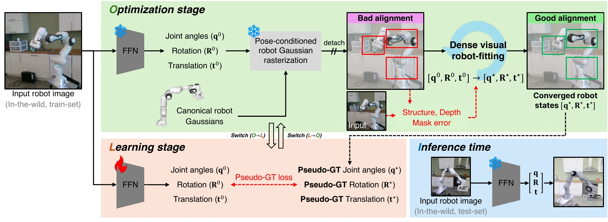
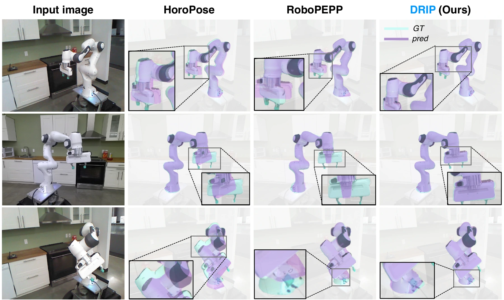

Abstract
Accurately estimating robot state, i.e., pose and joint angles, from a single image remains challenging for in-the-wild scenarios, where 3D state labels, calibrated sensor rigs, and joint encoders are often unavailable in practice. Prior learning-based methods rely on synthetic supervision and sparse 2D cues from real images, e.g., keypoints and masks, which provide limited cues for accurate monocular robot state estimation. To mitigate this, we present DRIP, a novel robot-fitting in the loop training framework that learns monocular robot state estimation from real images without 3D state labels. DRIP seamlessly integrates a feed-forward network with iterative robot state refinement in the training pipeline: the network provides an initial robot state prediction, which is then refined through an optimization stage that leverages dense visual cues, e.g., structure, geometry, and silhouette. The refined states are then used as pseudo-labels for subsequent training, forming a self-improving loop that transfers the benefits of refinement to the feed-forward model while preserving efficient single-shot inference at test time. Across multiple real-world robot datasets, DRIP outperforms prior approaches that rely on sparse self-supervision. We show that robot-fitting in the loop training enables effective real-image adaptation for monocular robot state estimation by generating reliable state-level pseudo-labels for stronger supervision.
Method

Qualitative Results

Quantitative Results
Monocular robot state estimation on four real-world Panda subsets in DREAM. DRIP achieves the highest ADD-AUC and lowest mean ADD across all four subsets.
| Method | Panda-AK (Azure) | Panda-XK (Kinect) | Panda-RS (RealSense) | Panda-ORB | ||||||||
|---|---|---|---|---|---|---|---|---|---|---|---|---|
| AUC ↑ | Mean ↓ | L1joint ↓ | AUC ↑ | Mean ↓ | L1joint ↓ | AUC ↑ | Mean ↓ | L1joint ↓ | AUC ↑ | Mean ↓ | L1joint ↓ | |
| RoboPose | 70.4 | 34.3 | – | 77.6 | 22.3 | – | 74.3 | 26.0 | – | 70.4 | 30.1 | – |
| HoroPose | 82.2 | 18.9 | 6.9 | 76.0 | 24.0 | 6.1 | 75.2 | 24.8 | 10.4 | 75.2 | 24.8 | 7.6 |
| RoboPEPP | 75.3 | 28.9 | 10.6 | 78.5 | 22.4 | 8.5 | 80.5 | 23.1 | 8.1 | 77.5 | 27.5 | 15.7 |
| RoboTAG | 83.1 | – | – | 75.7 | – | – | 78.3 | – | – | 77.5 | – | – |
| DRIP (ours) | 83.4 | 16.6 | 8.3 | 84.4 | 15.5 | 4.5 | 82.5 | 17.5 | 3.9 | 78.4 | 21.6 | 6.3 |
ADD-AUC ↑: higher is better. Mean ADD (mm) ↓ and mean joint-angle error (°) ↓: lower is better. Best results are bold. HoroPose and RoboPEPP use their official checkpoints; RoboTAG results are reported from its paper. “–” indicates an unreported value.
| Subset | Method | J1 | J2 | J3 | J4 | J5 | J6 | Avg. |
|---|---|---|---|---|---|---|---|---|
| Panda-XK | HoroPose | 10.74 | 4.85 | 4.66 | 2.81 | 6.65 | 6.71 | 6.07 |
| RoboPEPP | 28.95 | 3.06 | 3.46 | 1.53 | 5.97 | 7.98 | 8.49 | |
| DRIP | 10.06 | 2.46 | 4.22 | 1.85 | 3.60 | 5.00 | 4.53 | |
| Panda-RS | HoroPose | 34.58 | 6.97 | 6.38 | 5.28 | 5.68 | 3.29 | 10.36 |
| RoboPEPP | 31.21 | 4.81 | 3.86 | 2.37 | 4.09 | 1.95 | 8.05 | |
| DRIP | 10.71 | 1.84 | 3.31 | 2.29 | 2.95 | 2.13 | 3.87 | |
| Average | HoroPose | 22.66 | 5.91 | 5.52 | 4.04 | 6.17 | 4.73 | 8.22 |
| RoboPEPP | 30.08 | 3.94 | 3.66 | 1.95 | 5.03 | 4.97 | 8.27 | |
| DRIP | 10.39 | 2.15 | 3.77 | 2.07 | 3.28 | 3.57 | 4.20 |
Mean absolute joint-angle error (°) for the first six Panda revolute joints. Lower is better; best results within each subset are bold.
Citation
TBUAcknowledgement
We thank the members of AMILab for their helpful discussions and proofreading.
This work was supported by the Institute of Information & communications Technology Planning & Evaluation (IITP) grants (No. RS-2025-25443318, Physically-grounded Intelligence: A Dual Competency Approach to Embodied AGI through Constructing and Reasoning in the Real World (33%); No. RS-2024-00457882, National AI Research Lab Project (33%)), the National Research Foundation of Korea (NRF) grant (Grant No. RS-2024-00451947, Project Title: Interaction Framework for Connecting Users to Generative Experiences via Time-Space Expanded Multimedia: Centering on Social Communication Disorders (33%)) funded by the Korea government (MSIT) in 2026, and the InnoCORE program of the Ministry of Science and ICT (26-InnoCORE-01).
This website is licensed under a Creative Commons Attribution-ShareAlike 4.0 International License. This means you are free to borrow the source code of this website, we just ask that you link back to the original page in the footer.